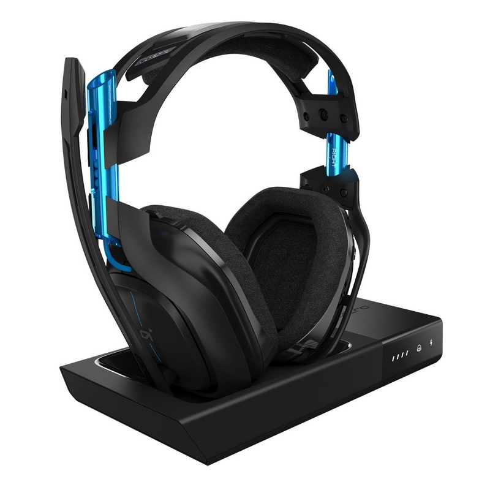
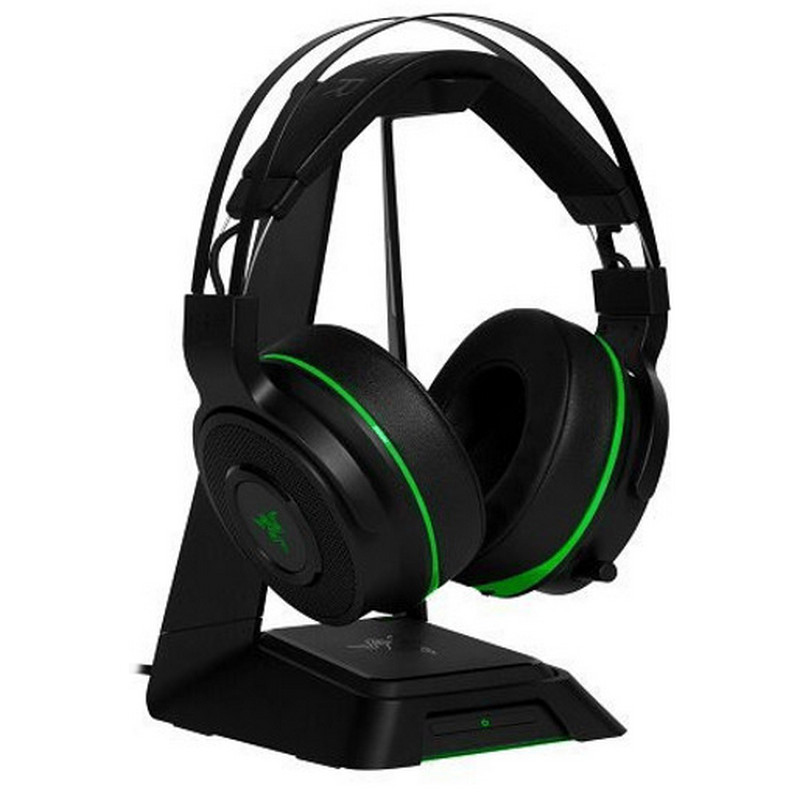

ASTRO Gaming A50
CARACTERÍSTICAS
Te presentamos los Auriculares Inalámbricos A50 de Astro Gaming. Experimenta la inmersión absoluta y un rendimiento excelente sin el inconveniente y las restricciones de los cables. ¡Libertad sin ataduras!
Especificaciones:
- Puertos e Interfaces:
- Tecnología de conectividad: Alámbrico/Inalámbrico
- Interfaz del dispositivo: RF Wireless + USB
- Alcance inalámbrico: 10 m
- Peso y dimensiones:
- Peso: 380 g
- Detalles técnicos:
- Conexión a PC: USB 2.0
- Micrófono:
- Tipo de dirección de micrófono: Uni
- Micrófono mudo: Si
- Auriculares:
- Audifonos: Circumaural
- Frecuencia de auricular: 20 - 20000 Hz
- Obstrucción: 48 ?
- Sensibilidad de auricular: 118 dB
- Tipo de imán: Neodimio
- Unidad de disco: 4 cm
- Batería:
- Autonomía: 15 h
- Diseño:
- Tipo de auricular: Binaurale
- Estilo de uso: Diadema
- Color del producto: Negro, Azul
- Productos compatibles: PS3. PS4, PC, Mac
- Desempeño:
- Utilizar con: PC/Juegos
Razer Thresher Ultimate
CARACTERÍSTICAS
Los mejores auriculares inalámbricos para juegos con tecnología Dolby Digital y Dolby Headphone, los auriculares Razer Thresher Ultimate Xbox. Además de ofrecer una inmersión de audio sin retardo, este auricular premium está forrado con cuero sintético, con almohadillas de espuma de memoria ligera que descansan perfectamente contra tu cabeza. Los botones integrados de control rápido y un micrófono digital retráctil le brindan acceso instantáneo al juego y al balance de voz, así como al volumen, incluso en el fragor de la batalla.
Con la tecnología Dolby Headphone, los auriculares Razer Thresher Ultimate Xbox One le brindan realismo de audio líder en la industria. Ya sea que esté detectando de dónde vienen los enemigos o esperando su copia de seguridad aérea, escuche cada detalle con la mayor claridad para una experiencia de juego realmente inmersiva.
Los auriculares Razer Thresher Ultimate Xbox One están diseñados para garantizar una conexión de larga distancia libre de retraso de hasta 12 metros. El micrófono digital retráctil le brinda la flexibilidad de comunicarse con sus compañeros de equipo con claridad, incluso en entornos ruidosos, entregando sus comandos con calidad y confiabilidad reales.
Diseñados para ser completamente cómodos incluso durante las maratones de juegos intensos, los almohadones de peluche livianos están hechos de espuma y cuero sintético para que se ajusten sin esfuerzo a la forma única de tu cabeza. Ahora puedes jugar durante horas sin necesidad de molestar a tus oídos.
- Cómodo con gafas. Con hendiduras de espuma
- Controles en el audífono: ajusta rápidamente el juego y el balance de voz
- Amortiguadores de oído de piel sintética que aíslan el ruido, manténgase completamente concentrado en su juego
- 7.1 Dolby Surround Sound. Para obtener el mejor sonido posicional de su clase
- Micrófono retráctil: se guarda completamente en la copa del oído
- Controlador de 50 mm: para un audio potente y realista
- Hasta 16 horas de duración de la batería: con una sola carga
Especificaciones:
- Dispositivos compatibles: Xbox y PC
- Audio: Nox Urano 650W / ThermalTake 600W
- Respuesta de frecuencia: 12 - 28,000 Hz
- Controladores: 50 mm, con imanes de neodimio
- Impedancia: 32Ω a 1kHz
- Sonido envolvente: Auriculares Dolby®
- Conectividad: RF 2.4GHz, hasta 12m
- Controles: Controles de equilibrio de juegos y chat en auriculares
- Micrófono:
- Micrófono de pluma unidireccional retráctil
- Respuesta de frecuencia: 100 - 10,000 Hz
- Sensibilidad (@ 1kHz, 1V / Pa): -38 ± 3dB
- Relación de señal a ruido:> 55 dB
- Duración de la batería: Hasta 16 horas con una sola carga
- Soporte para auriculares: Sí
- Receptor de BaseStation: Sí
Logitech G231 Prodigy
CARACTERÍSTICAS
Les presentamos los auriculares gaming G231 Prodigy de Logitech. Los juegos no son sólo gráficos. El sonido complementa la imagen. G231, que utiliza transductores de neodimio de 40 mm, aporta un sonido estéreo de alta calidad para sumergirse de lleno en el juego, de principio a fin. G231 funciona con Xbox One, Playstation y PC, para que oigas el increíble audio de todos tus juegos.
Almohadillas de tela deportivas. Un tacto suave para el juego más implacable. Las sesiones de juego maratonianas suelen ser acaloradas... y sudorosas. Hemos cubierto las almohadillas de G231 con un material deportivo suave cuidadosamente seleccionado para un uso cómodo hora tras hora. Las cubiertas se quitan fácilmente para lavarlas y mantener los auriculares impecables.
Diseño ligero, no te pesará. El diseño de las piezas auriculares es ligero pero no reduce la calidad del audio. Un ensamblaje ligero y equilibrado facilita la concentración en el juego. Hasta podrías olvidar que estás usando unos auriculares con micrófono.
Micrófono unidireccional plegable. A veces el silencio es lo que da la victoria. Para que le oigan bien alto y bien claro. El micrófono unidireccional de G231 se puede colocar para que capte sólo tu voz. ¿Que no te apetece hablar? Se pliega y se aparta fácilmente.
Controles integrados en el cable. Control de sonido, al alcance de la mano. El conmutador de silencio y el mando de volumen están siempre a mano, para realizar ajustes rápidos y precisos. Se integran en un cable de 2 metros.
Flexibilidad máxima. Sabemos que incluso los gemelos, cuando juegan, tienen sus diferencias. Para un ajuste personalizado, las piezas auriculares giran hasta 90 grados. Y, dado que giran hasta quedar planas, tienen menos tendencia a romperse por el uso y el desgaste diario.
Especificaciones:
- Requisitos del sistema:
- Sistema operativo Windows soportado: Windows 10 Education, Windows 10 Education x64, Windows 10 Enterprise, Windows 10 Enterprise x64, Windows 10 Home, Windows 10 Home x64, Windows 10 Pro, Windows 10 Pro x64, Windows 7 Enterprise, Windows 7 Enterprise x64, Windows 7 Home Basic, Windows 7 Home Basic x64, Windows 7 Home Premium, Windows 7 Home Premium x64, Windows 7 Professional, Windows 7 Starter, Windows 7 Starter x64, Windows 7 Ultimate, Windows 7 Ultimate x64, Windows 8, Windows 8 Enterprise, Windows 8 Enterprise x64, Windows 8 Pro, Windows 8 Pro x64, Windows 8 x64, Windows 8.1, Windows 8.1 Enterprise, Windows 8.1 Enterprise x64, Windows 8.1 Pro, Windows 8.1 Pro x64, Windows 8.1 x64
- Puertos e Interfaces
- Tecnología de conectividad: Alámbrico
- Interfaz del dispositivo: 3.5 mm (1/8 ")
- Longitud de cable: 2 m
- Peso y dimensiones:
- Ancho: 184 mm
- Profundidad: 89,2 mm
- Altura: 189 mm
- Peso: 255 g
- Micrófono:
- Frecuencia de micrófono: 50 - 20000 Hz
- Sensibilidad de micrófono: 40 dB
- Efecto de cancelación de ruido: No
- Tipo de dirección de micrófono: Cardioid
- Auriculares:
- Audifonos: Circumaural
- Frecuencia de auricular: 20 - 20000 Hz
- Obstrucción: 32 ?
- Sensibilidad de auricular: 90 dB
- Unidad de disco: 4 cm
- Diseño :
- Tipo de auricular: Binaurale
- Estilo de uso: Diadema
- Color del producto: Negro, Naranja
- Desempeño:
- Utilizar con: PC/Juegos